Explore Malaga
A Brief History
Málaga was founded as a Phoenician colony and developed under Roman, Visigothic, Islamic, and Christian rule on the Costa del Sol, with a port that long connected Andalusia to Mediterranean trade. Its Alcazaba, cathedral, and waterfront recall reconquest and early modern fortification. Pablo Picasso was born here in 1881, and the 20th century brought coastal tourism, airport expansion, and cultural institutions bearing his name.
Attractions Map
Top Sights & Activities
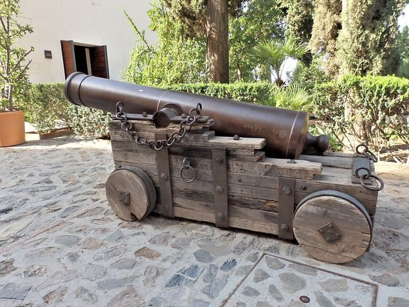
Castillo de Gibralfaro
Gibralfaro Castle crowns the hill above Málaga's Alcazaba and was reinforced in the 14th century during the Nasrid period. Ramparts and towers protected the citadel and port below. A road and path from the city center lead to walls with views over the bay and urban coastline.
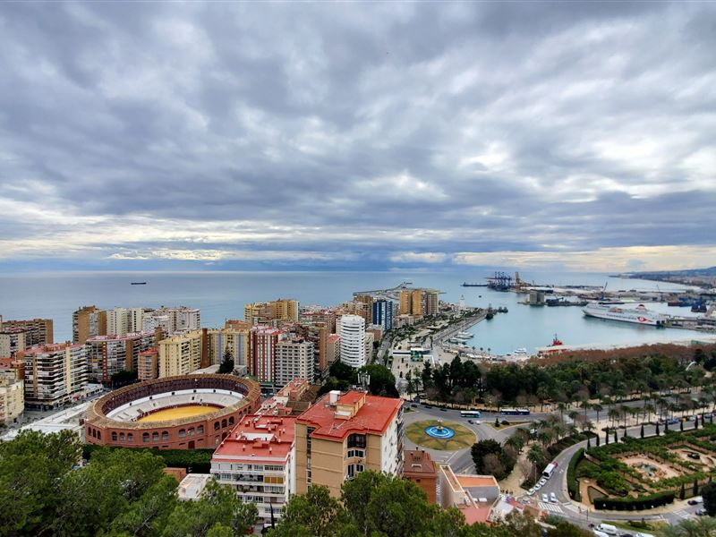
Mirador de Gibralfaro
Mirador de Gibralfaro is a viewpoint beside the castle ramparts overlooking Málaga, the port, and the Mediterranean. The terrace is reached along the upper road on Gibralfaro hill and provides a clear panorama of the cathedral, old town, and coastal plain below the fortress.
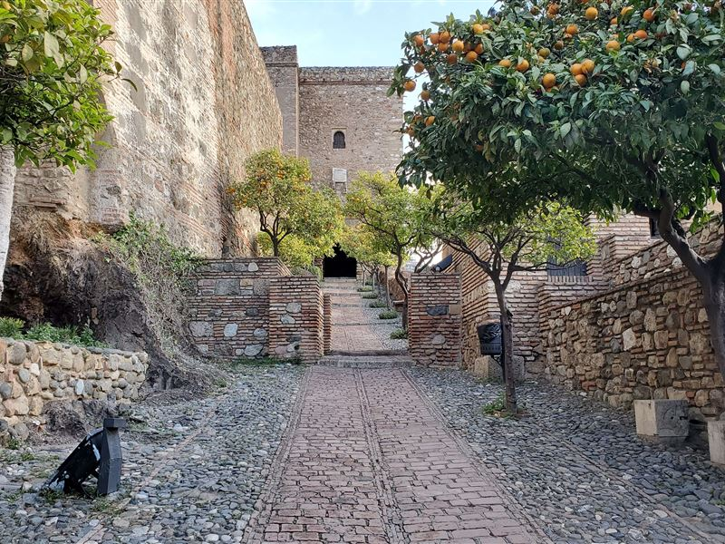
Alcazaba
The Alcazaba of Málaga is a fortified palace complex begun in the 11th century on a hillside facing the sea. Courtyards, walls, and gardens preserve Islamic military and residential architecture from before Christian reconquest in 1487. It connects by path to Gibralfaro above the Roman theater.
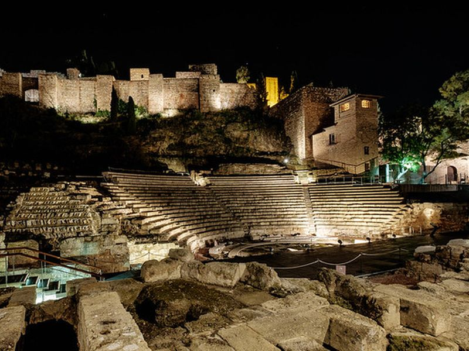
Teatro Romano de Málaga
The Roman theater at the foot of the Alcazaba was built in the 1st century BC and later buried until rediscovery in the 20th century. Stone seating and stage foundations lie beside the visitor center on Calle Alcazabilla. The site links Málaga's classical past with the Islamic fortress above.
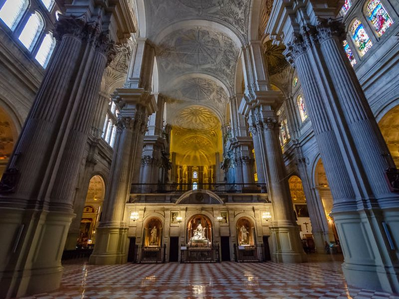
Santa Iglesia Catedral Basílica de la Encarnación de Málaga
Málaga Cathedral was built between the 16th and 18th centuries on the site of the former mosque. Its mixed Renaissance and Baroque fabric earned the nickname La Manquita for an unfinished south tower. The church remains the seat of the Diocese of Málaga near the old commercial center.
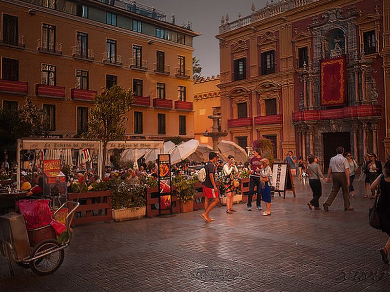
Plaza del Obispo
Plaza del Obispo lies before the cathedral façade and the Episcopal Palace in Málaga's historic core. The square developed as a ceremonial space for the diocese after reconquest. Its fountain and stone paving frame views of the cathedral entrance and surrounding civic buildings.
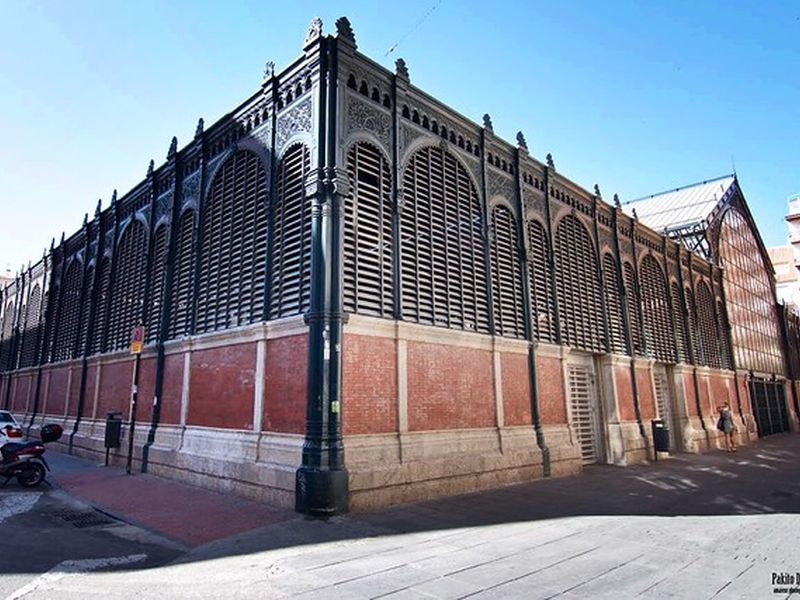
Mercado de Atarazanas
Mercado de Atarazanas occupies a 19th-century iron market hall on the site of medieval shipyards. Stained glass and vendor stalls sell local produce and seafood near the city center. The building preserves a public market tradition linked to Málaga's port economy.
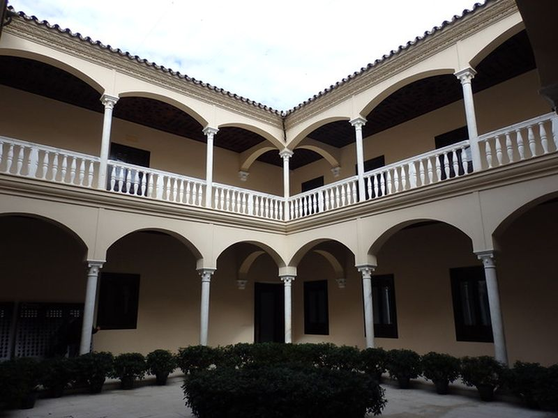
Museo de Málaga
Museo de Málaga is housed in the Palacio de la Aduana near the port and combines archaeology and fine arts collections of the province. Galleries present Roman mosaics, Islamic ceramics, and paintings from the 19th century. The neoclassical building served customs before becoming a public museum.
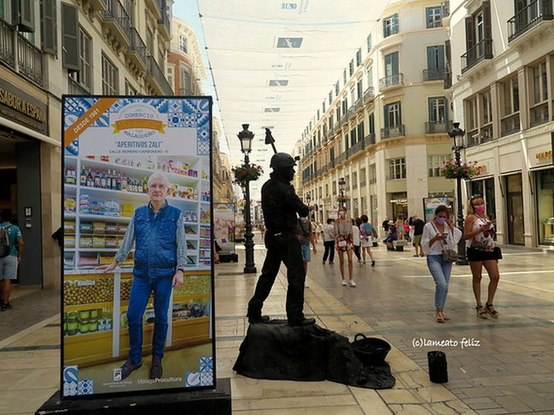
Calle Larios
Calle Larios is the main commercial pedestrian street linking the port area with Plaza de la Constitución. Opened in the late 19th century, its uniform facades reflect urban modernization after the demolition of earlier walls. Shops and cafés line the axis through the expanded city center.
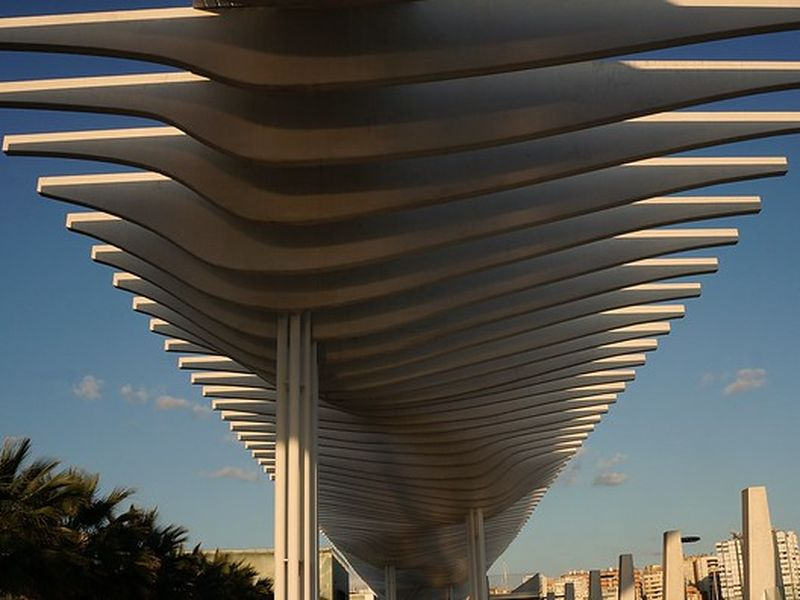
Palmeral de Las Sorpresas
Palmeral de las Sorpresas is a waterfront promenade and palm garden along Málaga's port mole. Opened in the early 21st century, its canopy structure and walkways connect the city center with cruise terminals. The area provides open views toward the harbor and Mediterranean.
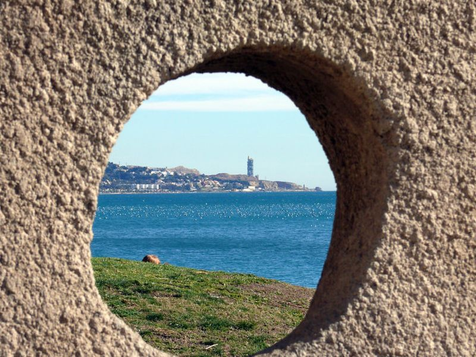
Playa la Malagueta
La Malagueta is the principal urban beach east of Málaga's port breakwater. Its dark sand and promenade developed with 20th-century seaside leisure beside the Paseo de Reding. The beach remains the most accessible coastal strip from the historic center and port district.